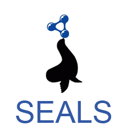
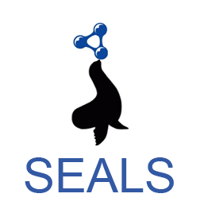

The growth of the ontology alignment area in the past ten years has led to the development of many ontology alignment tools. After several years of experience in the OAEI, we observed that the results only slightly improved in terms of the alignment quality (precision/recall resp. F-measure). Based on this insight, it is clear that fully automatic ontology matching approaches slowly reach an upper bound of the alignment quality they can achieve. A work by (Jimenez-Ruiz et al., 2012) has shown that simulating user interactions with 30% error rate during the alignment process has led to the same results as non-interactive matching. Thus, in addition to the validation of the automatically generated alignments by domain experts, we believe that there is further room for improving the quality of the generated alignments by incorporating user interaction. User involvement during the matching process has been identified as one of the challenges in front of the ontology alignment community by (Shvaiko et al., 2013) and user interaction with a system is an integral part of it.
At the same time with the tendency of increasing ontology sizes, the alignment problem also grows. It is not feasible for a user to, for instance validate all candidate mappings generated by a system, i.e., tool developers should aim at reducing unnecessary user interventions. All required efforts of the human have to be taken into account and it has to be in an appropriate proportion to the result. Thus, beside the quality of the alignment, other measures like the number of interactions are interesting and meaningful to decide which matching system is best suitable for a certain matching task. By now, all OAEI tracks focus on fully automatic matching and semi-automatic matching is not evaluated although such systems already exist, e.g., overview in (Ivanova et al., 2015). As long as the evaluation of such systems is not driven forward, it is hardly possible to systematically compare the quality of interactive matching approaches.
In this 5th edition of the Interactive track we use four OAEI datasets, namely Conference, Anatomy, Phenotype and Large Biomedical Ontologies (LargeBio). The Conference dataset covers 16 ontologies describing the domain of conference organization. We only use the test cases for which an alignment is publicly available (altogether 21 alignments/tasks). The Anatomy dataset includes two ontologies (1 task), the Adult Mouse Anatomy (AMA) ontology and a part of the National Cancer Institute Thesaurus (NCI) describing the human anatomy. The Phenotype dataset has four ontologies which are the Human Phenotype Ontology (HPO), the Mammalian Phenotype Ontology (MP), the Human Disease Ontology (DOID), and the Orphanet and Rare Diseases Ontology (ORDO). Finally, the LargeBio consists of 6 tasks with different sizes ranging from tens to hundreds of thousands classes and aims at finding alignments between the Foundational Model of Anatomy (FMA), SNOMED CT, and the National Cancer Institute Thesaurus (NCI).
The quality of the generated alignments in the Conference, Anatomy and LargeBio tracks has been constantly increasing but in most cases only by a small amount (by a few percent). For example, in the Conference track in 2013, the best system according to F-measure was YAM++ with 70% (Cuenca Grau et al., 2013). On the other hand, while the best result according to F-measure for the Anatomy track was achieved last year by AML with 94% there has been very little improvement over previous few campaigns (only few percent). This shows that there is room for improvement, which could be filled by interactive means.
The interactive matching track was organized at OAEI 2017 for the fifth time. The goal of this evaluation is to simulate interactive matching (see (Dragisic et al., 2016) and (Paulheim et al., 2013)), where a human expert is involved to validate mappings found by the matching system. In the evaluation, we look at how interacting with the user improves the matching results. The SEALS client was modified to allow interactive matchers to ask an oracle. The interactive matcher can present a correspondence to the oracle, which then tells the system whether the correspondence is right or wrong. Same as last year we have extended this functionality - a matcher can present simultaneously several correspondences to the oracle. Similarly to the last two years, this year, in addition to emulating the perfect user, we also consider domain experts with variable error rates which reflects a more realistic scenario where a (simulated) user does not necessarily provide a correct answer. We experiment with three different error rates, 0.1, 0.2 and 0.3. The errors were randomly introduced into the reference alignment with given rates.
The evaluations of the Conference and Anatomy datasets were run on a server with 3.46 GHz (6 cores) and 8GB RAM allocated to the matching systems. Each system was run ten times and the final result of a system for each error rate represents the average of these runs. This is the same configuration which was used in the non-interactive version of the Anatomy track and runtimes in the interactive version of this track are therefore comparable. For the Conference dataset with the ra1 alignment, we considered macro-average of precision and recall of different ontology pairs, while the number of interactions represent the total number of interactions in all tasks. Finally, the ten runs are averaged. The evaluations of the Phenotype and the LargeBio datasets (each system was run one time) were run on a Ubuntu Laptop with an Intel Core i7-4600U CPU @ 2.10GHz x 4 and allocating 15Gb of RAM.
| Measure | Description | Meaning for the evaluation |
|---|---|---|
| Precision, Recall, F-measure | Measure the tool's performance against the fixed reference alignment. | Show in absolute terms how the tool performed in the matching problem. |
| Precision Oracle, Recall Oracle and F-measure Oracle | Measure the tool's performance against the reference as modified by the oracle's errors. | Show how the tool is impacted by the errors. |
| Precision and Negative Precision | Measure the performance of the oracle itself. | Show what type of errors the oracle made, and thus explain the performance of the tool when faced with these errors. |
The four tables below present the results for the Anatomy dataset with four different error rates. The first two columns in each of the tables present the run times (in seconds) and the size of the alignment. The next eight columns present the precision, recall, F-measure and recall+ obtained from the interactive and non-interactive tracks for the Anatomy dataset. The measure recall+ indicates the amount of detected non-trivial equivalence correspondences. To calculate it the trivial correspondences (those with the same normalized label including those in the oboInOwlnamespace as well) have been removed as well as correspondences expressing relations different from equivalence. The meaning of the other columns is described above at the beginning of the Results section. Fig. 1 shows the time intervals between the questions to the user/oracle for the different systems and error rates for the ten runs (the runs are depicted with different colors).
We first compare the performance of the four systems with an all-knowing oracle (0.0 error rate), in terms of precision, recall, F-measure and recall+, to the results obtained in the non-interactive Anatomy track ("Precision", "Recall", "F-measure", "Recall+", "Precision Non Inter", "Recall Non Inter", "F-measure Non Inter" and "Recall+ Non Inter"). The effect of introducing interactions with the oracle/user is mostly pronounced for the ALIN system and especially for its recall measure - ALIN's recall increases more than 2 times. On the opposite side is XMap - it benefits the least from the interaction with the oracle. XMap differs with less than 0.2 percentage point in terms of Precision, Recall, F-measure and 0.5 percentage point regarding Recall+ from the non-interactive runs. At the same time AML's recall increases with less than 2 percentage points and LogMap's recall does not change. User interactions affect differently the precision measure - it increases for all systems and it is most advantageous for LogMap which precision increases with around 7.1 percentage points. Consequently, the ALIN's F-measure increases the most (from 0.504 to 0.882), the F-measure for LogMap and AML slightly changes. AML has the highest F-measure for this error rate as well as for the rest of the tested error rates. It is worth noting that ALIN detects only trivial correspondences in the non-interactive track ("Recall+ Non Inter" = 0), introducing user interactions led to detecting some non-trivial correspondences ("Recall+" = 0.454). Thus it seems that ALIN is relying only on user interaction to generate non-trivial mappings. The recall+ slightly improves for LogMap and XMap and with around 3 percentage points for AML. In terms of the alignment size and the number of total requests, AML generates the largest alignment, XMap uses the least number of requests to the oracle while ALIN generates the smallest alignment with almost 4 times more user interactions and about 6 times more distinct mappings then AML.
With the introduction of an erroneous oracle/user and moving towards higher error rates the systems' performance starts to slightly deteriorate in comparison to the all-knowing oracle. Very noticeably XMap's performance does not change at all with the increasing error rates. For the other three we can observe that the changes in the error rates influence the systems differently in comparison to the non-interactive results. The AML performance with an all-knowing oracle is better on all measures. To compare the interactive results with non-interactive results, the F-measure drops in the 0.2 and 0.3 cases, while the recall stays higher than the non-interactive results for all error rates. LogMap behaves similarly - the F-measure in the 0.3 case drops below the non-interactive results, while the precision stays higher in all error rates. ALIN's F-measure and recall are higher for all error rates in comparison to its non-interactive results, but its precision drops already in the 0.1 case. Overall the F-measure drops with about 15 percentage points for ALIN from error rate 0.0 to 0.3 and with around 3.7 and 2.7 percentage points respectively for LogMap and AML. One observation from the recall+ in interactive and non-interactive tracks, ALIN, AML and XMap have higher number in interactive track for all error rates which means they generated more non-trival mappings. The recall+ of LogMap in interactive track is higher than that in non-interactive only for all-knowing oracle. Now let us examine how the precision and recall are affected when moving from error rate 0.0 to 0.3 in connection to the values in the last two columns - "Precision" and "Negative Precision". The "Precision" value drops more than the value for "Negative Precision" for both AML and LogMap, with a very noticeable difference for AML. Taking into account that the "Precision" impacts precision and "Negative Precision" impacts recall we would expect that the precision drops more than recall for both AML and LogMap. This is actually observed - AML's precision and recall drop with respectively 4.6 percentage points and 0.9 percentage point around and LogMap's - with around 5.1 and 2.6 percentage points. The "Precision" value drops more than the value for "Negative Precision" as well for XMap but we do not observe changes for the precision and recall likely due to the very small number of requests. Another observation is connected to the values in the "Precision Oracle" and "Recall Oracle" columns. AML values are approximately constant, which means that the impact of the errors is linear - even though it does increase the number of queries with the error rate. The impact of the errors is also linear for XMap, the corresponding measures drop even less than AML's. ALIN has exactly the same precision according to the oracle; its recall drops slowly but consistently. In this case though, the drop in the recall is undoubtedly due to the fact that it decreases the number of queries with the error rate and thus captures less mappings in total. It should be safe to consider that the impact of the errors is also linear in the case of this tool. LogMap, as the last year, has a noticeable drop in both "Precision Oracle" and "Recall Oracle" which indicates a supralinear impact of errors.
While the size of the alignments produced by LogMap and AML slightly increases with the increasing error rates, the size of the ALIN's alignment decreases. The same trend is observed for the number of total and distinct mappings requests that ALIN makes to the user - when the error rate increases the number of questions to the user decreases. The number of total and distinct mappings requests for AML increases with the error rate and the two values are equal for each tool across the different error rates, i.e., one user interaction contains one mapping and they do not ask the user the same question twice. ALIN on the other side combines several mappings in one request to the user. These two numbers for LogMap are same through the different error rates. Furthermore, different from last year, LogMap asks the relationships of ">", "<" and "=" in each request. This is why the number of distinct mappings (1164) is more than the number of total requests (388). The size of the alignment generated by XMap changes with less than a mapping on average, thus the tool is impacted by errors but on a very small scale. The number of the requests to the oracle does not change for XMap across the error rates. Another difference is observed in the ratio of correct to incorrect requests made to the oracle ("True Positives" and "True Negatives"). In the case of an all-knowing oracle, all the systems make more incorrect than correct requests. The ratios of correct and incorrect requests of ALIN, AML, LogMap and XMap are 0.88, 0.27, 0.32 and 0.17 respectively. AML, LogMap, XMap keep almost the same ratios in different error rates. However as the error rate increases, ALIN makes more correct requests with the ratios 1.02, 1.07, 1.12 in error rates 0.1, 0.2 and 0.3 respectively.
For an interactive system the time intervals at which the user is involved in an interaction are important. Fig. 1 presents a comparison between the systems regarding the time periods at which the system presents a question to the user. Across the ten runs and different error rates the AML, LogMap and XMap mean requests intervals are around 1 and 0 ms respectively. The average of ALIN's mean intervals is 141 ms. While there are no significant deviations of this values for LogMap, for AML several outliers are observed, i.e., the interval between few of the AML requests took up to 400 ms, one even took up to 600 ms. The run times between the different error rates slightly decrease for ALIN while there is no significant change for LogMap, AML and XMap. AML, LogMap and XMap generate an alignment for less than a minute with LogMap performing twice as faster as AML.
The take away of these analyses is that all systems perform better with an all-knowing oracle than in the non-interactive Anatomy track in terms of F-measure. XMap benefits the least from the interaction with the oracle. ALIN performs better for all error rates in the interactive evaluation than in the non-interactive one. It seems that ALIN is relying only on user interaction to generate non-trivial mappings. For AML all three measures (precision, recall and F-measure) are higher in the Interactive track with 0.0 and 0.1 error rates than in the non-interactive, for LogMap the recall in the 0.0 case is the same as its non-interactive recall and drops under it in the 0.1 error rate. The growth of the error rate impacts different measures in the different systems but noticeably the XMap performance is barely affected by user errors. The impact of the oracle errors is linear for ALIN, AML and XMap and supralinear for LogMap. The ratio of correct to incorrect questions to the oracle is different in the four systems and further changes with the increasing error rates which could be an indicator of different strategies to handle user errors.
The participants this year are same as 2016. Among these, AML and LogMap have participated in the track since it has been established in 2013. AML, LogMap and XMap show similar results to the results from 2016 in terms of run time, alignment size, precision, recall, F-measure, request intervals and recall+. ALIN has an obvious increase in run time which is two times more than that in 2016. LogMap has the same number of total requests for all error rates which is lower than that in 2016 because it contains three different questions including ">", "<" and "=" relationships for each pair of concepts in one request. If the relationship of the two concepts is equal, the oracle will return "True Negative" for ">" and "<" relationships which is the reason why LogMap has a higher increase in the number of incorrect mappings. The change of F-measure with different error rates for each system is the same as the result in 2016. Similarly to the last year the impact of oracle's errors is linear for AML, ALIN, XMap and supralinear for LogMap.
The four tables below present the results for the Conference dataset with four different error rates. The columns are described above at the beginning of the Results section. Fig. 2 shows the average requests intervals per task (21 tasks in total per run) between the questions to the user/oracle for the different systems and error rates for all tasks and the ten runs (the runs are depicted with different colors). The first number under the system name is the average number of requests and the second number is the average period of the average requests intervals for all tasks and runs.
When systems are evaluated using an all-knowing oracle, AML, ALIN and LogMap present a higher F-measure than the one they obtained non-interactively. ALIN shows the greatest improvement, almost doubling its F-measure, and also the highest F-measure in absolute terms when questioning the oracle. AML and LogMap improved by 6 and 3.7 percentage points respectively. The substantial improvement of ALIN is mostly supported by gains in recall (around 46 percentage points), whereas AML and LogMap show more balanced improvements. XMap results are exactly the same as for the non-interactive run which is not very surprising given that it performs only four requests to the oracle for all 21 tasks and they are all for true negatives.
When an error rate is introduced, ALIN is the system that is more severely affected, loosing around 10, 8.5 and 7.7 percentage points in F-measure with each increase in error rate. On the other hand, LogMap is resilient, with losses between 2 percentage points and 1 percentage point. Similarly to the performance shown for the Anatomy dataset XMap is the most resilient and it is not impacted by the oracle errors. In all tests with an error-producing oracle AML produced the highest F-measure. When comparing the systems' performance across the different error rates with their non-interactive results we note that the precision drops earlier than the recall. ALIN's recall is higher than its non-interactive results even in the 0.3 (its very low recall in the non-interactive track also contributes to this result) but the precision drops already for the smallest error rate. AML's precision drops under the non-interactive results in the 0.2 case and the recall - in the 0.3. LogMap's precision drops in the 0.3 case while its recall stays almost the same as the non-interactive results. The larger drop in "Precision" than "Negative Precision" values between the 0.0 and 0.3 error rates explains the larger decrease in precision (40, 20 and 9 percentage points) than the decrease in recall (17, 6 and 3 percentage points) for all three systems (ALIN, AML and LogMap). The impact of oracle errors ("Precision Oracle" and "Recall Oracle" columns) on the systems' behaviour for the Conference dataset is similar to the impact of the errors on their behaviour for the Anatomy dataset - it is linear for ALIN and AML and supralinear for LogMap. It is also linear for XMap, we observe almost unnoticable change for its "Recall Oracle" measure.
The number of total requests posed by each system is different. LogMap poses the lower number (82 for every test), while on average, AML poses around 284, whereas ALIN poses around 316 total requests. As mentioned earlier XMap does make only 4 request for all 21 tasks. The novel feature of analysing multiple mappings at once was apparently used by two systems, ALIN, which is querying one or more individual mappings for each interaction, and LogMap, which contains three mappings in one request. Analysing the values for the "True Positives" and "True Negatives" we observe that the systems mainly ask the oracle about incorrect mappings (true negatives) - in the 0.0 case the ratio is 0.32, 0.21 and 0.25 for ALIN, AML and LogMap respectively. This ratio stays the same in the 0.3 case for ALIN, slightly drops for LogMap to 0.24 but increases for AML to 0.34, i.e., with increasing the error rates AML starts to ask more positive questions. XMap asks mainly about true negatives but with the increasing error rates starts asking about false positives. Time between requests is low for all systems under 1ms, with LogMap showing an increase in variance for tasks where errors are introduced. The total run times does not change between the error rates.
The take away of this analysis is that all systems, except XMap, perform better on all measures with an all-knowing oracle than in the non-interactive Conference track. In the 0.1 error rate AML and LogMap still perform better on all measures, while ALIN's precision drops below its non-interactive precision. Its F-measure however stays higher than the non-interactive value even in the 0.3 case due to the huge improvement in the recall. XMap measures do not change across the error rates and are the same as for the non-interactive track.
The participants this year are the same systems in 2016. The variation trends with the respect to precision, recall and F-measure in each system between interactive and non-interactive are similar. The influence due to the different error rates among these measures is also similar. Regarding the requests to the oracle, LogMap has a decrease in total requests from 140 around in 2016 to 82 in 2017 which contributes the increase in the percentage of correct requests. In terms of the time between requests, LogMap has a decrease from 1.9 ms on average in 2016 to less than 1ms in 2017. ALIN also has a decrease in time between requests from 1.48 on average in 2016 to 0.445 on average in 2017.
While LogMap, XMap and AML make use of user interactions exclusively in the post-matching steps to filter their candidate mappings, ALIN can also add new candidate mappings to its initial set. LogMap and AML both request feedback on only selected mapping candidates (based on their similarity patterns or their involvement in unsatisfiabilities). LogMap presents three mappings to the user while AML only presents one mapping at a time to the user. XMap also presents one mapping at a time and asks mainly for true negatives. ALIN also employs the new feature similar to LogMap - analysing several mappings simultaneously - and can present up to three mappings together to the user if a full entity name in a candidate mapping is the same as another entity name in another candidate mapping. The difference between ALIN and LogMap is the latter contains three questions (">", "<" and "=") for every candidate mapping.
With the all-knowing oracle all systems, except XMap, perform better than their non-interactive results for both datasets. Very noticeably XMap's performance does not change across the error rates and it also barely benefits from the interaction with the oracle (and only for the Anatomy dataset). Although systems' performance deteriorates when moving towards larger error rates there are still benefits from the user interaction - some of the systems' measures stay above their non-interactive values even for the larger error rates. For the Anatomy dataset different measures are affected in the different systems in comparison to their non-interactive results; for the Conference dataset the precision drops under the non-interactive values faster than the recall. The drop in precision and recall for all systems, except XMap, is larger for the Conference dataset than for the Anatomy dataset with the increasing error rates.
The impact of the oracle's errors is linear for ALIN, AML and XMap and supralinear for LogMap for both datasets. One difference between the two datasets is the ratio of correct to incorrect requests to the oracle. There is a clear trend for all three systems (except XMap) in the Conference dataset, the ratio stays around and under 0.5 for all error rates. In the Anatomy dataset the ratio changes differently for each system.
Two models for system response times are frequently used in the literature (Dabrowski et al., 2011): Shneiderman and Seow take different approaches to categorize the response times. Shneiderman takes task-centred view and sort out the response times in four categories according to task complexity: typing, mouse movement (50-150 ms), simple frequent tasks (1 s), common tasks (2-4 s) and complex tasks (8-12 s). He suggests that the user is more tolerable to delays with the growing complexity of the task at hand. Unfortunately no clear definition is given for how to define the task complexity. The Seow's model looks at the problem from a user-centred perspective by considering the user expectations towards the execution of a task: instantaneous (100-200 ms), immediate (0.5-1 s), continuous (2-5 s), captive (7-10 s); Ontology alignment is a cognitively demanding task and can fall into the third or forth categories in both models. In this regard the response times (request intervals as we call them above) observed with both the Anatomy and Conference dataset fall into the tolerable and acceptable response times, and even into the first categories, in both models. The request intervals for both AML and LogMap stay around 1 ms for both datasets. ALIN's request intervals are 140 ms for the Anatomy dataset on average and less than 1 ms for the Conference dataset. It could be the case however that the user could not take advantage of very low response times because the task complexity may result in higher user response time (analogically it measures the time the user needs to respond to the system after the system is ready).
Zlatan Dragisic, Valentina Ivanova, Patrick Lambrix, Daniel Faria, Ernesto Jimenez-Ruiz and Catia Pesquita. "User validation in ontology alignment". ISWC 2016. [paper] [technical report]
Bernardo Cuenca Grau , Zlatan Dragisic , Kai Eckert & et al. "Results of the Ontology Alignment Evaluation Initiative 2013" OM 2013. [pdf]
Heiko Paulheim, Sven Hertling, Dominique Ritze. "Towards Evaluating Interactive Ontology Matching Tools". ESWC 2013. [pdf]
Ernesto Jimenez-Ruiz, Bernardo Cuenca Grau, Yujiao Zhou, Ian Horrocks. "Large-scale Interactive Ontology Matching: Algorithms and Implementation". ECAI 2012. [pdf]
Valentina Ivanova, Patrick Lambrix, Johan Åberg. "Requirements for and evaluation of user support for large-scale ontology alignment". ESWC 2015. [publisher page]
Pavel Shvaiko, Jérôme Euzenat. "Ontology matching: state of the art and future challenges". Knowledge and Data Engineering 2013. [publisher page]
Jim Dabrowski, Ethan V. Munson. "40 years of searching for the best computer system response time". Interacting with Computers 2011. [publisher page]
This track is currently organized by Zlatan Dragisic, Daniel Faria, Valentina Ivanova, Ernesto Jimenez Ruiz, Patrick Lambrix, Huanyu Li, and Catia Pesquita. If you have any problems working with the ontologies or any suggestions related to this track, feel free to write an email to ernesto [at] cs [.] ox [.] ac [.] uk or ernesto [.] jimenez [.] ruiz [at] gmail [.] com
We thank Dominique Ritze and Heiko Paulheim, the organisers of the 2013 and 2014 editions of this track, who were very helpful in the setting up of the 2015 edition.
The track is partially supported by the Optique project.